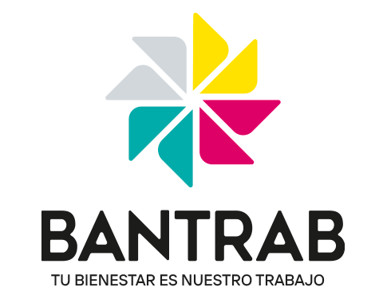
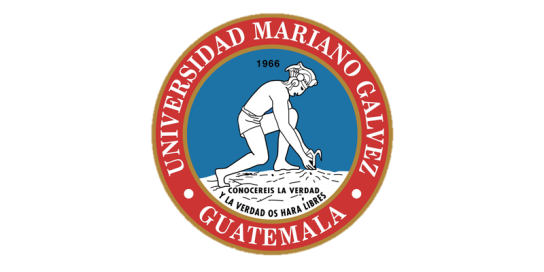

Hola, soy Eswin Pineda
Soy un estudiante universitario de la Carrera de Ingeniería en Sistemas, con ganas y deseos de aprender y poder aplicarlos para solucionar problemas
Sobre Mí
Soy un programador con un poco de experiencia en Java, C#, HTML, CSS, SQL Server. Disfruto trabajando en proyectos que me desafían y me permiten aprender nuevas habilidades. Estoy en busqueda de poder desarrollarme como un Desarrollador Junior y tengo el deseo de aprender y conocer nuevas tecnologías, y al adquirir el conocimiento poder aplicarlas en los proyectos que pueda desarrollar y asi poder solucionar muchos problemas
Habilidades
- C#
- Java
- .Net Framework
- C++
- SQL Server
- MySQL
- HTML
- CSS
- JavaScript
- PHP
- Git
- GitHub
- PowerBi
- Photoshop
- Illustrator
- CorelDraw
- Python
- Oracle Database
Hobbies
Soy Músico, me encanta el Fútbol, me gustan los Videojuegos, también me gusta mucho ver Series y Peliculas, también me encanta leer comics y mangas
Proyectos


Sistema de Hotelería
×

Sistema de Hotelería
Proyecto desarrollado a través del lenguaje de programación Visual Studio .NET y base de datos SQL Server o MySQL, el proyecto se estructura a través de los siguientes requerimientos: Intranet, Modelado de un sistema comercial en 3 servidores (base de datos, servicios y aplicación)
Tecnologías:
- C#
- API REST
- ASP.Net
- HTML
- CSS
- JavaScript
- SQL Server
- CRUD (Logica DML)
Repositorio GitHub
(click en el ícono para ir al código fuente)

Sistema de evaluación de personal
×

Sistema de evaluación de personal
Desarrollo de una aplicación web que permita evaluar el desempeño de un trabajador a través de una serie de preguntas y ponderación de esta
1. Modelo de negocio, este modelo permitirá diseñar un diagrama entidad relación, diagrama de clases y posteriormente el diseño de una base de datos. La base de datos a desarrollar será SQL Server.
2. Programación de servicios, el objetivo de este servidor es tener la operabilidad de la base de datos y permitir una comunicación e intercambio de datos a través del estándar XML, este servidor servirá de intermediario entre la base de datos y la interfaz al usuario final. Este estándar será del tipo SOAP y se programará en JAX-WS
- Este servicio debe incluir la apertura y cierre de la base de datos SQL Server y con ello permitir las instrucciones DML (select, insert, update, delete) del modelo de negocio asignado.
- Debe instalarse y configurarse un servidor Glassfish, Apache Tomcat o Payara.
- En este servidor Glassfish, Apache Tomcat o Payara se publicará el servicio JAX-WS desarrollado en Java, posteriormente este servicio podrá ser instanciado en cualquier interfaz al usuario.
Tecnologías:
- Java
- JAX-WS
- SQL Server
- CRUD (Logica DML)
Repositorio GitHub
(click en el ícono para ir al código fuente)

Tabla Hash
×
Tabla Hash
Desarrollo de una aplicación de escritorio Java utilizando Tablas Hash con metodo de Encadenamiento Seprado
Desarrollo de una aplicación que contenga un menú con el ABC (Altas - Bajas - Cambios) de la tabla, deberá tener inicialmente un formulario de login, después de haberse logeado poder ingresar al menú principal el cual contendrá las opciones de Reporte de datos, Inserción, eliminación y actualización de nuevos datos además cierre de la aplicación.
También se desarrolla un login conectado a una base de datos en MySQL, con nombre de usuario y contraseña
Tecnologías:
- Java
- Java Swing
- MySQL
- CRUD
Repositorio GitHub
(click en el ícono para ir al código fuente)
Base de Datos Hotelería
×
Base de Datos Hotelería
En base al modelo de negocio asignado se realizará una base de datos, se deben listar las tablas, campos, clave primaria y foránea y modelo relacional, esta base de dato se debe diseñar en el servidor de base de datos elegido anteriormente.
Tablas que debe incluir el sistema:
1. Usuario: Registre las credenciales del empleado que tendrá acceso al sistema
2. Hotel: Registra los datos generales del hotel que presta el servicio
3. Tipo de habitación: Clasifica una habitación de acuerdo con la comodidad de esta
4. Habitación: Registro de las habitaciones disponibles en un hotel, incluye el tipo de habitación
5. Cliente: Registro los datos generales de la persona que solicita habitaciones
6. Empleados: Registro de personas que laboran en el hotel
7. Reservación: Consiste en el evento mas importante del sistema y divide la lógica de esta en las siguientes tablas:
- Reservación: Registra los datos del cliente, empleado, hotel, costos
- Detalle de reservación: Lista las habitaciones y los días reservados
Tecnologías:
- SQL Server
Repositorio GitHub
(click en el ícono para ir al código fuente)

Mi Portafolio Web
×
Mi Portafolio Web
Publicación de mi portafolio Web
Proyecto para desarrollar mi Portafolio, con mis proyectos, habilidades, experiencia laboral, educación y certificaciones
Tecnologías:
- HTML
- CSS
- JavaScript
Repositorio GitHub
(click en el ícono para ir al código fuente)
Experiencia Laboral
Auxiliar Operativo
2014-2015
Empresa: Banco Industrial
Recepción y conteo de valores, cuadre de caja
Customer Service
2019-2021
Empresa: Tigo Guatemala
Call Center, Soporte Tecnico, Servicio al Cliente, Ventas, generacion de ordenes de trabajo, reclamos

Auxiliar de Digitalización
2022-2024
Empresa: Bantrab
Recepción y revisssión de expedientes, Digitalización de expedientes
Educación

Ingeniería en Sistemas
Institución: Universidad Mariano Galvez de Guatemala
Año de Graduación: Estudio actualmente el 6to. Semestre
Bachiller en Computación
Institución: IPC de Villa Nueva JV
Año de Graduación: 2012
3ro. Básico
Institución: INEB Santa Isabel II JV
Año de Graduación: 2010
6to. Primaria
Institución: EORM No. 301 Niño Victorioso JM
Año de Graduación: 2007